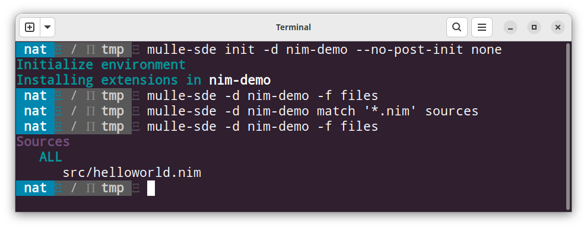

💠 Makefile maintainer
There is no better tool to structure a project with, than the filesystem tools you already have. That is either a textual command line terminal or the native GUI “File Explorer”, “Finder”, “Nautilus”. Large scale project reorganizations are usually a major pain in IDEs, but moving files between folders is a cinch in the shell or in the Finder.
mulle-sde as a project maintenance tool examines the file arrangement of your project and “reflects” it back into a “Makefile” or “CMakeLists.txt” or any other build system of your choice.
Demo: nim and make
Let’s create a build system for the nim language using make. cmake is more common for mulle-sde, but lets have a challenge here.
Helloworld.nim and a Makefile
Lets start with a “hello world” source, taken from the
nim-by-example website.
Though sources may reside in the root folder, a subfolder is more convenient
for technical reasons. So helloworld.nim is placed into a subdirectory called
src.
mkdir -p nim-demo/src
cat <<EOF > nim-demo/src/helloworld.nim
echo "Hello World"
EOF
A simple Makefile for the “helloworld” executable is:
cat <<EOF > nim-demo/Makefile
.SUFFIXES: .nim
SOURCES=src/helloworld.nim
OBJECTS=\$(SOURCES:.nim=.o)
.nim.o:
nim -c -o \$@ \$<
helloworld: \$(OBJECTS)
ld -o \$@ \$<
EOF
A make run shows this to be working.
mulle-sde integration (from scratch)
The first step is to make this a mulle-sde project. As neither nim nor make are supported by any mulle-sde extensions yet, only a bare project can be created:
mulle-sde init -d nim-demo --no-post-init none
Let mulle-sde manage the Makefile
The mulle-sde -f files command, checks, if a source is identified as an
interesting file by mulle-sde. The first time the output will be empty though.
src/helloworld.nim is not yet considered to be interesting. For that a
matcher is needed to associate files with the .nim extension with a
mulle-sde file type. Lets call the type “sources”.
mulle-sde -d nim-demo match '*.nim' sources
Now mulle-sde -d nim-demo -f files will return:

How to get this information into the Makefile ? A tool that edits an existing Makefile is complicated to devise and seldom foolproof. Overwriting the whole Makefile is undesirable, as it would delete user edits. The best idea is to let some parts of the Makefile be generated as separate file. This file is then included by the Makefile. Thus the Makefile becomes:
cat <<EOF > nim-demo/Makefile
.SUFFIXES: .nim
SOURCES=
include make/sources.make
OBJECTS=\$(SOURCES:.nim=.o)
.nim.o:
nim -c -o \$@ \$<
helloworld: \$(OBJECTS)
ld -o \$@ \$<
EOF
The file make/sources.make should be generated by mulle-sde on
mulle-sde -f reflect. Lets create a small script to do just that:
cat <<EOF > nim-demo/nim-make-reflect
#! /bin/sh
mkdir -p make
mulle-match list --format '%T += %f\n' > make/sources.make
EOF
chmod 755 nim-demo/nim-make-reflect
mulle-match is the program that is actually used when
mulle-sde filesis run.mulle-sde filesis very limited, butmulle-match listis quite powerful. Besides various filter options, you can specify a printf like format to be used on each file. In the above format string%Tturns the mulle-sde file type into an uppercase identifier and%fprints the filename. Everything else is printed verbatim.
To add the script into the reflection mechanism of mulle-sde, a named task has
to be created. The name “filesystem” is conventional, it is not required.
The integration with the mulle-sde reflect mechanism is done
via the environment MULLE_SDE_REFLECT_CALLBACKS variable:
mulle-sde -f -d nim-demo task create --callback filesystem "${PWD}/nim-demo/nim-make-reflect"
mulle-sde -d nim-demo environment --global set MULLE_SDE_REFLECT_CALLBACKS filesystem
After mulle-sde -d nim-demo reflect the file cmake/sources.make will have appeared.
mulle-sde reflect
ls cmake
Now “nim” files can be added and deleted. They can be renamed and moved around.
As long as mulle-sde reflect is called afterwards, the changes will be picked
up and the Makefile will be up-to-date.
A nim/make mulle-sde extension
Ideally one wants to be able to create a nim/make project like above with a single command line, such as:
mulle-sde init -d nim-demo -m nim/nim-developer executable
For this a mulle-sde “meta” extension is needed. mulle-sde extensions use the template capabilities to create boilerplate projects for new languages and build systems. There are several different extension types:
| Extension | Description |
|---|---|
extra |
a project can have multiple “extra” extensions. Typical “extra” extensions are “sublime-text” or “vscode”, which add IDE support. |
runtime |
a project can have one “runtime” extension, which is programming language specific |
oneshot |
“oneshot” extensions are used by the “mulle-sde add” command to add files to a project. |
buildtool |
a project can have one “buildtool” extension, to support tools like “autconf” or “cmake” |
meta |
a project is initialized with a “meta” extension, which combines buildtool and runtime and extra extensions |
To support make a “buildtool” extension is needed. Both are combined by a “meta extension”. So all in all lets create three extensions:
Create the runtime extension
For the language nim a runtime extension will be used. The runtime
extension defines the .nim file extension and adds a default
“helloworld” source. Extensions are grouped by a “vendor”, so VENDOR_NAME
(any word you like) must be specified:
mulle-sde -f init --no-post-init -d nim -DVENDOR_NAME=me -m mulle-sde/extension-developer runtime
Define the language basics with:
cat <<EOF > nim/src/me/nim/language
# language;dialect;extensions
nim;;nim
EOF
Create the demo source file:
mkdir -p nim/src/me/nim/project/executable/src
cat <<EOF > nim/src/me/nim/project/executable/src/PROJECT_NAME.nim
echo "Hello World"
EOF
Add a tool declaration for nim to be used in restrictive environments:
cat <<EOF > nim/src/me/nim/tool
nim
EOF
That’s it.
Create the buildtool extension
The buildtool extension is used to setup the Makefile and the reflection
mechanism:
mulle-sde -f init --no-post-init -d nim-make -DVENDOR_NAME=me -m mulle-sde/extension-developer buildtool
Create the demo Makefile:
mkdir -p nim-make/src/me/nim-make/project/all
cat <<EOF > nim-make/src/me/nim-make/project/all/Makefile
.SUFFIXES: .<|PROJECT_EXTENSION|>
SOURCES=
include make/sources.make
OBJECTS=\$(SOURCES:.<|PROJECT_EXTENSION|>=.o)
.<|PROJECT_EXTENSION|>.o:
nim -c -o \$@ \$<
<|PROJECT_NAME|>: \$(OBJECTS)
ld -o \$@ \$<
EOF
Create the match pattern for .nim files:
mkdir -p nim-make/src/me/nim-make/share/match/match.d
cat <<EOF > nim-make/src/me/nim-make/share/match/match.d/20-sources--nim-sources
*.nim
EOF
Setup the callback for the reflection mechanism:
mkdir -p nim-make/src/me/nim-make/share/monitor/bin
cat <<EOF > nim-make/src/me/nim-make/share/monitor/bin/filesystem-callback
#! /bin/sh
echo "filesystem"
EOF
chmod 755 nim-make/src/me/nim-make/share/monitor/bin/filesystem-callback
Create a task that produces the make/sources.make file:
mkdir -p nim-make/src/me/nim-make/share/monitor/libexec
cat <<EOF > nim-make/src/me/nim-make/share/monitor/libexec/filesystem-task.sh
#! /usr/bin/env mulle-bash
# shellcheck shell=bash
#
# This function will be called by mulle-monitor
#
filesystem_task_run()
{
log_entry "filesystem_task_run" "\$@"
mkdir -p make
mulle-match list --format '%T += %f\n' > make/sources.make
}
#
# Convenience to test your script standalone
#
if [ -z "\${MULLE_MONITOR_TASK_LOAD}" ]
then
filesystem_task_run "\$@"
fi
EOF
chmod 755 nim-make/src/me/nim-make/share/monitor/libexec/filesystem-task.sh
Add the “filesystem” callback to the callbacks executed on reflect with an environment setting:
cat <<EOF > nim-make/src/me/nim-make/environment
MULLE_SDE_REFLECT_CALLBACKS='${MULLE_SDE_REFLECT_CALLBACKS}:filesystem'
EOF
Add make to the list of tools for restrictive environments:
cat <<EOF > nim-make/src/me/nim-make/tool
make;optional
EOF
Create the meta extension
mulle-sde -f init --no-post-init -d nim-developer -DVENDOR_NAME=me -m mulle-sde/extension-developer meta
The meta extension ties the runtime and the buildtool together. And that’s it:
cat <<EOF >> nim-developer/src/me/nim-developer/inherit
me/nim;runtime
me/nim-make;buildtool
EOF
Test the meta extension
Add your (uninstalled) extensions to the mulle-sde extension search path. Then pick the meta extension “nim-developer” by vendor “me” and create a new “executable” project in directory “nim-demo2”:
MULLE_SDE_EXTENSION_PATH="$PWD/nim/src:\
$PWD/nim-make/src:\
$PWD/nim-developer/src:\
${MULLE_SDE_EXTENSION_PATH}" \
mulle-sde init -d nim-demo2 -m me/nim-developer executable
mulle-sde -d nim-demo2 run make
As
nim-demo2is now a proper mulle-sde project of type “executable”, the-fflag that was used pervasively on the “none” project commands, can now be omitted.
Final Words
mulle-sde-developer provides extensive support for maintaining cmake projects. Language support is available for C, C++, Objective-C.